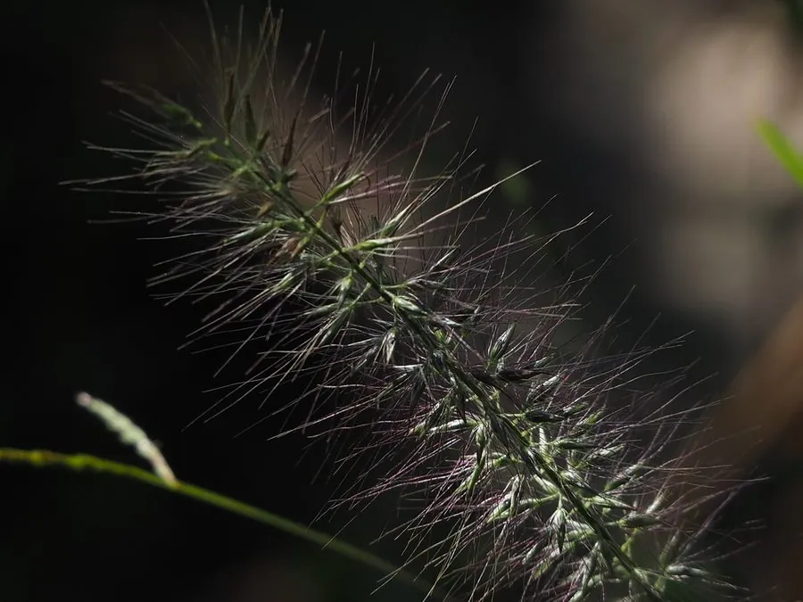

花卉与草本 · 植物界
狼尾草 Pennisetum alopecuroides

禾本科多年生草本，花序形似蓬松的狼尾，秋季抽出，是花境中灵动的观赏草，原产东亚与澳大利亚。
- 分类
- 门被子植物门纲木兰纲目禾本目科禾本科属狼尾草属
- 栖息环境
- 东亚与澳大利亚的草地、路旁与山坡，喜光、耐旱、耐瘠薄
- 地理分布
- 原产东亚与澳大利亚，中国各地常见，现世界温暖地区栽培
- 保护级别
- 暂无评估
物种志
狼尾草为禾本科狼尾草属多年生草本，株高 60–120 厘米，丛生，茎直立。叶片带状，长 30–60 厘米。圆锥花序圆柱形，长 10–25 厘米，刚毛状，形似蓬松的狼尾，初为淡绿色，后转紫褐色或黄褐色，花期 8–10 月；果实为颖果。
狼尾草原产东亚和澳大利亚，中国各地山坡、路旁和荒地常见，喜阳光充足、温暖湿润和排水良好的环境，耐旱耐瘠薄，适应性强。它花序形似狼尾，随风摇曳，是花境中灵动的观赏草，也可作干花和切叶材料；根系发达，可用于水土保持和边坡绿化。栽培以分株和播种为主，管理粗放。
形态与习性
- 株高60–120 厘米，丛生
- 花期8–10 月，花序长 10–25 厘米
- 果期秋季结颖果
- 光照喜充足阳光
- 水分耐旱，忌积水
- 土壤疏松、排水良好的壤土，耐瘠薄
- 繁殖分株、播种
- 主要用途花境、干花、水土保持
趣味知识
- 狼尾草的花序圆柱形、刚毛蓬松，形似狼尾，因此得名。
- 花序初为淡绿色，后转紫褐色或黄褐色，秋季随风摇曳。
- 它的根系发达，可用于水土保持和边坡绿化。
- 狼尾草耐旱耐瘠薄，管理粗放，是花境的常用观赏草。